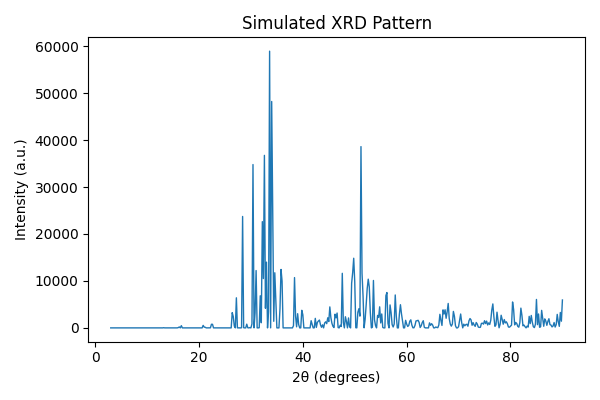
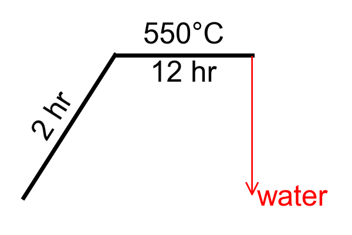

Example Usage for FoSpy
The files in this folder are examples of what a full API editing session might look like for Synthesis and Template files using the FOS format.
Most users won't want to write scripts like these for every synthesis, but given enough script capabilites, we can move toward automating synthesis file generation for many syntheses at once from a variety of inputs, ranging from a GUI application to AI-assisted transcription.
The uninterupted full script can be found here, but each snippet is pulled apart here and explained.
This page contains checkpoints where the current synthesis or template file is saved. The initial inputs and the result of each checkpoint can be found at the pages below:
Boilerplate and Debugging
First, I import some of the classes I will be using. Since I'm only manually creating a Synthesis and a TemplateSet, I don't need to import any of the classes that are created in the process (like Materials, Treatments, etc.). Those are created automatically when reading the input files.
from FoSpy.blocks.synthesis import Synthesis
from FoSpy.blocks.template import TemplateSet
from chemformula import ChemFormula
FoSpy uses a _debug module to print progress messages during some processes that may be helpful for understanding what is going on in the background, or what is being executed successfully before something breaks. By default, no debug messages are printed. Each module uses its own Debug object to print messages, so you can either enable/disable all debug messages, or you can pick a particular module that you want to keep track of and only enable _debug.on for that module.
# No debug messages by default, but they can be turned on like this.
from FoSpy._debug import all_debugs_on, all_debugs_off
all_debugs_on(soundoff=False)
# Change the width of your debug screen so that module labels print on one line.
from FoSpy import _debug as db
db.DEBUG_WIDTH = 120
# Optional way to turn on/off one module's debug messages.
from FoSpy.blocks.blocks import _debug as block_debug
block_debug.on = True
(Checkpoint 1) Opening and saving FOS files
This code loads my synthesis and my templates from my respective files, and then saves them to a different location. Once the location has been changed, calling save() without a filename will now just re-save them in the new location.
# load synthesis and templates from files
my_synthesis = Synthesis.fromFile(r"synthesis/start_synthesis.fos")
my_templates = TemplateSet.fromFile(r"templates/start_templates.fos")
# save the synthesis to a json for comparison
my_synthesis.save(r"synthesis/start_synthesis.json")
# save the files to new files so that they don't overwrite the old ones.
my_synthesis.save(r"synthesis/check01.fos")
my_templates.save(r"templates/check01.fos")
Object-Oriented Shortcuts
The nice thing about python is that in most cases, if you set a new variable "equal" to something, the new variable just points at the original instead of copying it. So any edits to my_meta, for example, will also be edits to my_synthesis.metadata.
Beware if you are not familiar with object-oriented code or namespaces: This also means that if you reassign a variable, it unlinks it from the original. For example, in the code below, I mistakenly link my_mats = my_synthesis.cifs before correctly assigning my_mats = my_synthesis.materials in the next line. This does not link the CIF files and materials together in any way. Instead, my_mats "forgets" that it was ever linked to the CIFs and points at the materials for the rest of the script.
# some shortcuts so I don't need to keep referencing my_synthesis
my_meta = my_synthesis.metadata
my_exps = my_synthesis.experimenters
my_reaction = my_synthesis.reaction
my_mats = my_synthesis.cifs
my_mats = my_synthesis.materials
my_treats = my_synthesis.treatments
(Checkpoint 2) Renaming Blocks and Adding Comments
Each type of block in a FOS has a set of fields that are required for it. Additionally, there is a separate list of "optional" fields that still must follow certain rules when you put them in a block.
However, you may want to modify the name of a section or a value without changing its expected behavior. You can do this by adding a "rename" block.
* To rename main FOS headers: The rename block is an extra heading ([Rename]) in the FOS file.
* To rename properties inside a block The rename block is a nested block:
[Experimenters]
// This tells the FOS reader to expect "isu_research_group" instead of affiliation, *only* for the first experimenter.
rename: [
affiliation: isu_research_group
]
name: Travis Errthum
isu_research_group : Kovnir Group
orcid: 0009-0006-1937-5672
We can apply this in python using the rename_block() command. Note that for safety, we also reapply our my_mats shortcut, in case reassigning the block value might have unlinked our original shortcut.
Unless we rearrange our blocks with keys_to_end(), the new [Rename] block would have been at the bottom of the FOS file, after the embedded CIF file.
my_synthesis.clear_all_comments()
my_synthesis.rename_block("materials","reagents")
my_mats = my_synthesis.reagents
my_synthesis.rename.add_comments("This new block has been added because I renamed a required block.")
my_synthesis.rename.materials.add_comments("Synthesis files are required to have a materials block, so",
"This line specifies that it has been renamed to reagents.")
my_exps[0].rename_block("affiliation","isu_research_group")
my_synthesis.keys_to_end("cifs")
my_synthesis.save("synthesis/check02.fos")
Comments
In the code above, I also attached a couple of comments to lines in the FOS file. Comments are printed above the line they are attached to. For example, my_synthesis.rename.add_comments() attaches comments above the [Rename] header in the FOS file. The other command, my_synthesis.rename.materials.add_comments(), attaches the comment above the new materials:reagents line underneath the [Rename] heading.
(Checkpoint 3) Changing Simple Data
Here I change some of the metadata and reaction information for my synthesis. Certain variables are automatically converted. For example, the nominal_formula is coded to be a ChemFormula object, so when I set that property equal to simple text, it automatically converts the text into a true formula object and raises an error if it's not able to read it.
# change some metadata for my synthesis
my_meta.name = "TE002"
my_meta.date = "05-17-2026"
my_meta.internal_project_ID = "Arsenide 28+d clathrates"
my_reaction.nominal_formula = "Ba8Cu13Zn11As28.5"
my_synthesis.products = [{
"name": "Barium transition-metal arsenide (8-24-28.5)",
"formula": "Ba8Cu13Zn11As28.5",
"expected": True,
"obtained": True,
"expected_amount": "250.0",
"expected_amount_unit": "mg",
"obtained_amount": "150.0",
"obtained_amount_unit": "mg",
"observations": "Gray Powder",
"characterizations": "PXRD",
"structure_comments": "Unique clathrate with variable occupancy on hyper-coordinate Arsenic site. Space group Cmcm"
}]
my_synthesis.save("synthesis/check03.fos")
(Checkpoint 4) Finding Blocks in Lists and Using Templates
My original template file had an entry in the experimenters block for an experimenter named Joe. If I want to add Joe to the experimenters for my synthesis, I have to pull his entry from the list of experimenter templates. I can do this with the get_first() command, which finds the first entry in a list with a property matching the one I specify (in this case, template_name="Joe"). There is also get_any() which uses similar search rules but returns a list of all matching entries. There are also deletion commands that follow the same rules, like remove_any()
After finding Joe's template and setting it to the joe_template shortcut, I have to fill in the empty values in the template before it can be used as a complete experimenter. In this case, Joe's template is only missing an affiliation value, so I use the fill() command to fill it in and return a true experimenter. As you'll see later on, you can put as many property=value statements in the fill() command as you need to in order to fill in the template.
Notice that the renaming functionality we used earlier for affiliation only applies to the first experimenter. Joe's experimenter entry still uses the expected "affiliation" tag until told otherwise.
my_synthesis.clear_all_comments()
# more shortcuts
exp_temps = my_templates.experimenters
mat_temps = my_templates.materials
cif_temps = my_templates.cifs
# template file has a template for Joe, but it's missing an affiliation value.
# So I fill in the affiliation and add it to the experimenters on my synthesis
joe_template = exp_temps.get_first(template_name="Joe")
joe = joe_template.fill(affiliation="Kovnir Group - Iowa State University")
my_exps.append(joe)
my_exps.add_comments("Note that now there are two experimenters, so the",
"experimenters header has changed to double brackets")
my_synthesis.save("synthesis/check04.fos")
(Checkpoint 5) Adding Unexpected Variable Types
Sometimes, you may want to add a special block type (like Material, Treatment, or Experimenter), even if the FOS program isn't expecting it. You can do this using the add_block command. In this case, I want create a new property for my first experimenter to give him a friend. The unexpected friend property gets assigned as an "experimenter", which eventually gets matched to the Experimenter data type in the code.
Then, perhaps after an awkward social encounter, I decide to refer to Joe as Travis's colleague instead of friend. Note that because friend was already an unexpected property, renaming this does not add friend: colleague to the rename block in the resulting FOS, because it is simpler to just move the "experimenter" assignment over to the new colleague block.
my_synthesis.clear_all_comments()
travis = my_synthesis.experimenters[0]
travis.add_block("friend","experimenter",joe.copy())
travis.friend.affiliation = "Graham's Dad"
travis.rename_block("friend","colleague")
travis.colleague.add_comments("This copy of Joe has information about him as Travis's colleague")
joe.name.add_comments("This copy of Joe has information about him as an experimenter")
my_exps.add_comments("Note that there are now multiple experimenters in this block,",
"So the header now has double brackets")
my_synthesis.save("synthesis/check05.fos")
In a FOS file, unexpected property types are signaled using property$alias, where alias is a word that had been pre-programmed to match to a certain block type (see the example below). Usually aliases are the same word as their corresponding type, but more documentation will be created to see available types and what alias to use for them.
// Note that there are now multiple experimenters in this block,
// So the header now has double brackets
[[Experimenters]]
name: Travis Errthum
isu_research_group: Kovnir Group - Iowa State University
orcid: 0009-0006-1937-5672
// This copy of Joe has information about him as Travis's colleague
colleague$experimenter: [
name: Joseph Race
affiliation: Graham's Dad
orcid: 0000-0002-8551-3627
]
rename: [
affiliation: isu_research_group
]
// This copy of Joe has information about him as an experimenter
name: Joseph Race
affiliation: Kovnir Group - Iowa State University
orcid: 0000-0002-8551-3627
Editing Objects in Listed Blocks
The materials block of my synthesis (my_mats = my_synthesis.materials) is a fancy list of Material objects. I can access an individual item in that list with an index in brackets (my_mats[i]). Python indices are zero-based, so my_mats[0] refers to the first material in the list (in this case barium). Since barium's amount_unit is specified as molar ratio, then changing the amount value changes the molar ratio.
# Changing Barium's molar ratio
my_mats[0].amount = 8
(Checkpoint 6) Creating Templates and Filling in Larger Templates
In addition to loading templates writting to FOS files, you can also create templates from existing blocks by using make_template() and specifying which properties you want to leave empty in the template. Here, I use the zinc material loaded from my synthesis to create a generic template for any metal powder with the same purity.
Then, I use the add_block() command we already used on our synthesis to add a separate block to store generic materials. This is to distinguish my new template from the other material templates in my file, which are only missing amount and type.
# I find zinc in my materials, change its ratio, and also generate a template
# from it.
zinc = my_mats.get_first(form="powder")
zinc.amount = 11
# The template name is "A generic metal powder, purity 0.995", and it has empty
# fields for name, formula, cas, and ratio
powder_template = zinc.make_template("A generic metal powder, purity 0.995",
"name","formula","cas","amount")
powder_template.default_key_order()
# This saves my powder template to a new category of templates titled "Generic$materials"
my_templates.add_block("generic","materials", powder_template)
my_templates.keys_to_end("cifs")
Filling in Larger Templates
When you have many values to fill into a template that may need to be determined by other subprocesses, using fill() with lots of property=value pieces will be difficult. Instead, you can construct a python dict (dictionary) which has all of the missing values, then send the whole dictionary to the fill() command.
# Setting up information that I want to fill into the powder template
copper_info = {
"name": "Copper",
"formula": "Cu",
"cas": "7440-50-8",
"amount": 13
}
# Generate a new material, copper, from the template I made earlier and add it
# to my synthesis materials
copper = powder_template.fill(**copper_info)
copper.clear_comments()
my_mats.append(copper)
# Here I'm using the arsenic template that was already in the template file to
# replace antimony.
arsenic_template = mat_temps.get_first(formula=ChemFormula("As"))
arsenic = arsenic_template.fill(type="reagent", amount=28.5)
my_mats.remove_any(cas="7440-36-0") # This removes the antimony from my synthesis
my_mats.append(arsenic)
clear = [file.clear_all_comments() for file in (my_synthesis, my_templates)]
my_synthesis.save("synthesis/check06.fos")
my_templates.save("templates/check06.fos")
(Checkpoint 7) Reusing Templates
When you fill in a template, it creates a copy with all the values filled in. So once I build a template of, say, a ramp section of an annealing profile, I can use that template to create several different ramp sections with different filled in values. Note that I have not yet added my new annealing treatments to my synthesis, so they will not appear in this checkpoint.
# Building templates from the existing annealing program on my synthesis so that
# I can replace it with a different program.
anneal_template = my_treats[2].make_template("Empty Anneal Template",
"repeats", "observations","program")
anneal_template.clear_comments()
ramp_template = my_treats[2].program[0].make_template("Any ramp",
"temp", "time")
dwell_template = my_treats[2].program[1].make_template("Any dwell",
"time")
# Save my new templates to my template file.
my_templates.treatments = [anneal_template]
my_templates.anneal_sections = [ramp_template, dwell_template]
my_templates.keys_to_end("cifs")
# Filling in my annealing templates
ramp1 = ramp_template.fill(temp="550", time="2")
ramp2 = ramp_template.fill(temp="650", time = "10")
dwell1 = dwell_template.fill(time="12")
dwell2 = dwell_template.fill(time="72")
# Using my anneal template to create two different annealing treatments with my
# different program sections.
anneal1 = anneal_template.fill(repeats=1,
observations="None",
program=[ramp1, dwell1])
anneal2 = anneal_template.fill(repeats=1,
observations="None",
program=[ramp2, dwell2])
anneal1.program.append({"type":"quench","medium":"water"})
my_templates.save("templates/check07.fos")
(Checkpoint 8) Removing Blocks From Lists Using Indices
In addition to the remove_any() command for lists of blocks, there is also remove_idx(from_idx, to_idx) which allows you to remove a range of values from the list. Here I'm using it to remove all treatments after my first 2 treatments, so that I can add my new annealing treatments to the synthesis instead.
# Remove all treatments except the first two
my_treats.remove_idx(from_idx=2)
# Adding both annealing treatments to my synthesis
for anneal in (anneal1, anneal2):
my_treats.append(anneal)
my_synthesis.save("synthesis/check08.fos")
(Checkpoint 9) Managing Embedded Files
Embedded files are just blocks like every other section, except they have a special embedded property that stores the un-edited lines of the original file.
# Copying Phil's cif from my templates into my synthesis.
py618 = cif_temps[0].copy()
my_synthesis.cifs.append(py618)
# copying the Ba2Zn5Sb6 cif from my synthesis to my templates
Ba2Zn5Sb6 = my_synthesis.cifs[0]
cif_temps.insert(0,Ba2Zn5Sb6)
# removing the Ba2Zn5Sb6 from my synthesis because it's not applicable for this
# sample.
my_synthesis.cifs.remove_any(file_name="Ba2Zn5Sb6_ICSD")
my_templates.save("templates/check09.fos")
my_synthesis.save("synthesis/check09.fos")
Calculation Routines
There is the capability to add "calculation_routines" to be executed when saving the file. This schedules commands to be run right before saving, so that calculated values are correct for the current state of the synthesis. Here, I schedule a calculation routine that will add a comment with weight percent above the ratio of every material with matching type. Calculated comments are given a special syntax so that they are stored when reading a FOS file, and they can be overwritten at any time with a new updated value.
# Every material gets a weight percent comment added above their ratio
my_synthesis.add_calc_routine("reagents.add_weight_pcts")
'''for anneal in my_synthesis.treatments.get_any(type="anneal"):
anneal.add_calc_routine("program.add_all_missing_parameters")'''
my_synthesis.reagents[0].amount.add_comments("Weight percents were calculated automatically when saving.")
(Checkpoint 10) Cleaning Up
All of the information in my new synthesis is now stored, and all the changes to my templates are now stored. But in the process, some of the information has been moved around or tacked on in ways that will make the FOS file hard to read in plain text. This doesn't matter for programs that are loading, editing, and saving files many files directly, but we can also clean up some things so that the file is easy to read: * Rearrange the blocks to the default order so that the CIFS are at the bottom of the file. * Set some specifc positions for certain blocks to make the FOS easier to read. * Set the generic templates block to use the "explicit" key:value syntax for all of its templates * Set the synthesis materials block to use the "looped" syntax where all the keys are specified at the beginning of the block.
# some reordering stuff to make the final printout more consistent.
my_templates.default_key_order()
my_templates.key_to_idx("generic", 3)
my_templates.key_to_idx("anneal_sections", 5)
my_templates.generic.set_list_type("explicit")
my_synthesis.default_key_order()
my_synthesis.key_to_idx("reagents", 5)
my_mats.set_list_type("looped")
my_templates.save("templates/check10.fos")
my_synthesis.save("synthesis/check10.fos")
# Silence all debugs except the one used for checking equality.
all_debugs_off(soundoff=False)
db._debug.on = True
# Check to see if the saved file matches the current python object.
print(f"Synthesis matches: {my_synthesis.matches_file()}")
print(f"Templates match: {my_templates.matches_file()}")
Bonus: Generating Figures
There are features being developed that allow generating useful figures from the information loaded in a FOS file. Currently we have two figures:
Simulating Powder Patterns
# optional: figure
my_synthesis.cifs[0].quick_pattern(subprocess=True)
Simulates powder diffraction data for the embedded CIF

Annealing Diagrams
# optional: figure
my_synthesis.treatments.get_first(type="anneal").show_plot()
Generates a temperature diagram for the annealing program.
